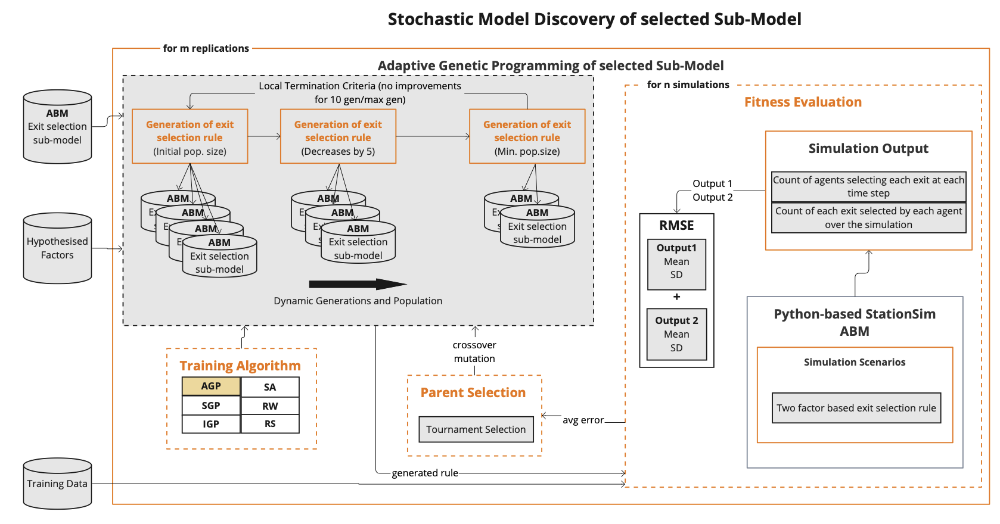

Inverse Generative Social Science for Identifying Stochastic Agent-Based Models
Minh Kieu
Senior Lecturer
University of Auckland, New Zealand
Lab website:
https://transportanalytics.nz
Issues with current Agent-Based Models
1. Complexity of model design
Modellers' bias
Complex human behaviours
Agents homogeneity
2. Data availability
3. Scalability
4. Transparency and Interpretability
Emergence of unexpected behaviours from the interactions of agents
Black Box
Types of decision making in ABMs on pedestrian systems (Senanayake et al. 2024)
Majority are rule-based
Inverse Generative Social Science

Contribution
Identifying Stochastic ABMs
Pseudo-truth: StationSim model
Stochastic model: age, gender, and maximum speed,
Random avoidance behaviour
Adaptive Generative Programming for identifying Stochastic ABMs
Target pseudo-truth rule: “Exit = Randomly based on the combination of distance and crowdedness”
Target pseudo-truth rule: “Exit = Randomly based on the combination of distance and crowdedness”
Primitive set used for exit selection

Stochastic model discovery with AGP

n keeps the track on consecutive generations without performance improvement, while m adjust the dynamic population
Stochastic model discovery with AGP
Errors of 5 different AGP runs
Factors identified

AGP results on deterministic, semi-stochastic and stochastic ABM

AGP vs Standard GP

AGP vs Immune principle-based GP

AGP vs Simulated Anneling

AGP vs Random Search

Conclusion
IGSS as the solution for issues with current Agent-Based Models
Model development & calibration
Transparency and interpretability
Adaptive Genetic Programming to identify stochastic models
Future works:
Real data
Complete set of rules
Inverse Generative Social Science for Identifying Stochastic Agent-Based Models
Thank you!
Questions?
Lab website:
https://transportanalytics.nz